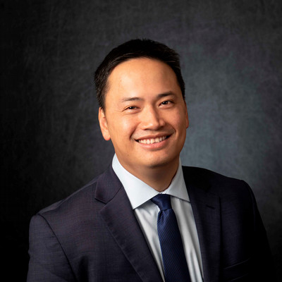

Shadow Judgment: AI and the Administrative Record
How AI-assisted tools shape the evidence and options considered by agencies—and what reasoned explanation and a reviewable record should require.
Associate Professor of Law · University of Missouri–Kansas City
My research focuses on AI and the law. I study how artificial intelligence and the technical systems around it reshape legal rules, public institutions, and the distribution of decision-making authority.
Two aims guide this work: to help policymakers make informed decisions about integrating AI into government in ways that improve public institutions and services, and to help lawyers, journalists, and the broader public understand how law shapes—and is shaped by—AI. I examine not only AI models, but also the software, infrastructure, evaluation practices, and human processes that shape how these systems are developed and used. I welcome feedback and collaboration on these questions.
Before entering academia, I spent nearly a decade as a software engineer, practiced patent litigation, clerked in federal courts, and advised the U.S. Senate on law and technology.
Affiliate, Harvard Berkman Klein Center for Internet & Society

Consultation & collaboration
With experience across software engineering, patent litigation, legal scholarship, and government, I bring a technically grounded perspective to legal and institutional questions raised by generative AI. I welcome conversations with law firms, lawyers, policymakers, journalists and news organizations, startups, and others exploring the implications of AI for their work. I am available as a subject-matter expert for consultation, speaking, and collaborative projects.
Consult with me about law and AI · bchau@umkc.edu ↗Research
My work connects legal scholarship with technical and empirical methods. One strand asks how AI changes the way legal and public institutions make decisions. Another examines how patent, privacy, tort, and administrative law should respond to technologies that develop and operate through complex systems.
I look for durable points of legal and policy intervention: the processes, infrastructure, interfaces, and institutional practices that can be observed and governed even as models change. My goal is to translate technical systems into clear terms for legal audiences and to develop practical proposals that help policymakers govern AI effectively.
How AI-assisted tools shape the evidence and options considered by agencies—and what reasoned explanation and a reviewable record should require.
Whether patent disclosure can support inventions whose value lies in training processes and measurable capabilities rather than a single, fixed model.
How permissions, tool access, approvals, monitoring, and audit trails can govern the systems that turn model outputs into real-world actions.
Selected scholarship
AI-assisted government decision-making and judicial review.
Patent disclosure, iterative training, and the protection of technical knowledge.
Coauthored empirical work on case recognition and legal AI evaluation.
23 Northwestern Journal of Technology and Intellectual Property 551 (2026).
With George He, Cambridge Forum on AI: Law and Governance (peer-reviewed).
Harvard Journal of Law & Technology Digest.
With Michael A. Livermore, European Journal of Empirical Legal Studies (peer-reviewed).
Teaching
Talks & service
Background
Legal experience: Senior Law and Technology Fellow, U.S. Senate; law clerk, U.S. Court of Appeals for the Federal Circuit; law clerk, U.S. District Court for the Eastern District of Texas; patent litigator at Fish & Richardson.
Engineering experience: Senior Software Engineer at Lyft; SaaS Software Engineer at Cisco Systems; Software Engineer at Silver Spring Networks.
Education: J.D., University of Virginia School of Law; A.M., Harvard University; B.A., University of California, Berkeley.